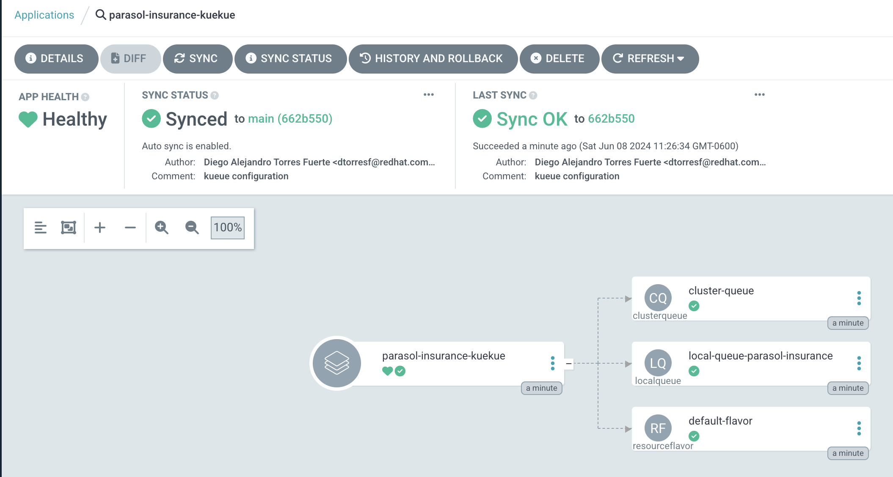
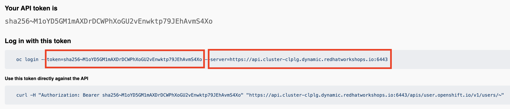
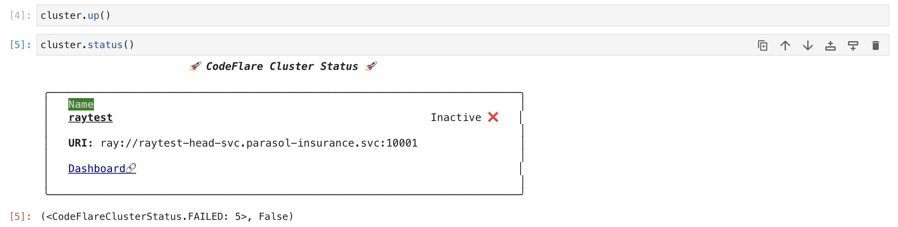
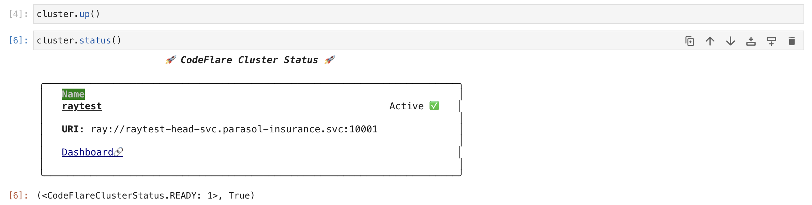
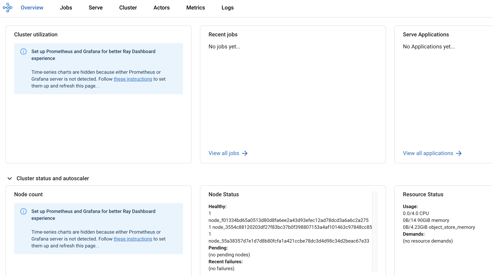
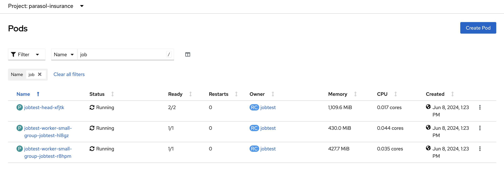
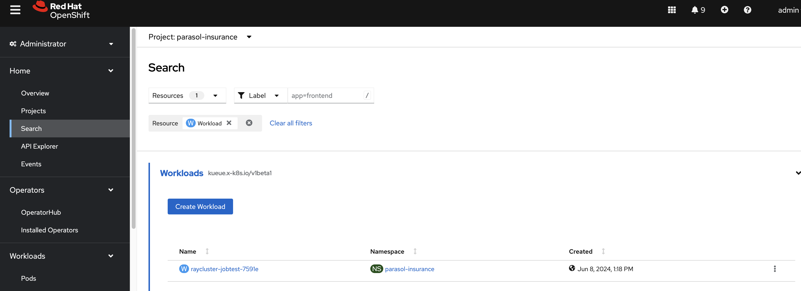
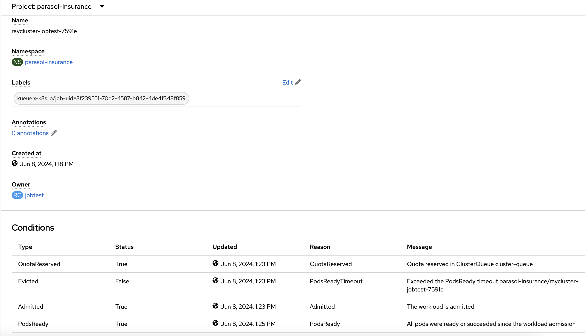
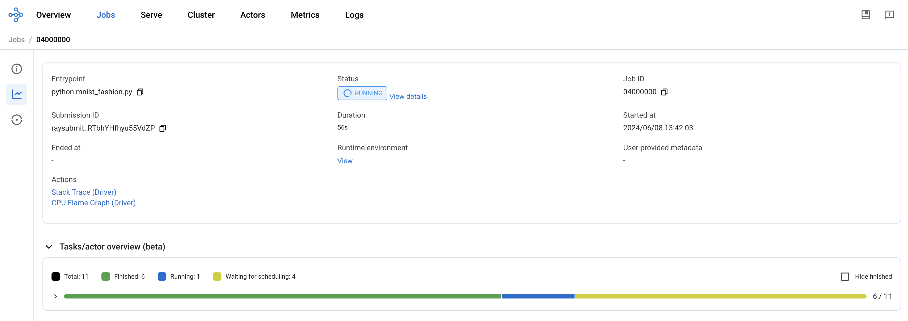

Distributed training
In this section, we will cover how to train a model on multiple containers using the Ray Cluster capabilities of the RHOAI platform.
The official documentation on how to perform distributed training with Ray can be found here: working with distributed workloads.
The ray cluster documentation can be found here: Ray Clusters Documentation.
Kueue is a kubernetes-native system that manages quotas and how jobs consume them. Kueue decides when a job should wait, when a job should be admitted to start (as in pods can be created) and when a job should be preempted (as in active pods should be deleted). Find more information about Kueue here: Kueue Documentation.
Enable Codeflare, Ray, and Kueue in the DataScienceCluster
In order to do Distributed Training, we’ll need to use Codeflare, Ray, and Kueue. Luckily for us, RHOAI already provides the CRDs (Custom Definition Resources) for Codeflare, Ray, and Kueue that are used for running distributed training. We just need to enable them in the DataScienceCluster.
As you can see in the DataScienceCluster, the components Codeflare, Ray, and Kueue are in the Removed state.
Let’s enable Codeflare, Ray, and Kueue in the DataScienceCluster.
If you recall, when creating our cluster overlays, we set up the parasol-insurance-dev and parasol-insurance-prod overlays from the Setup Dev & Prod section. In step 3, we copied componets/argocd/apps/overlays/eus-2.16 into our parasol-insurance-* overlay folder. Because we did this, our RHOAI operator is pointing to the components/operators/openshift-ai/aggregate/overlays/eus-2.16 folder. This means that the changes in this overlay will be applied to our parasol-insurance-* overlay. So in order to make changes to the RHOAI operator, we’ll need to make changes to the components/operators/openshift-ai/aggregate/overlays/eus-2.16 folder.
-
In the
components/operators/openshift-ai/instance/overlays/eus-2.16folder, update the kustomzation.yaml file by adding the following:components/operators/openshift-ai/instance/overlays/eus-2.16/kustomization.yaml- ../../components/components-distributed-computeSolution
components/operators/openshift-ai/instance/overlays/eus-2.16/kustomization.yamlapiVersion: kustomize.config.k8s.io/v1beta1 kind: Kustomization namespace: redhat-ods-applications resources: - ../../base components: - ../../components/components-serving - ../../components/components-training - ../../components/components-trustyai - ../../components/default-notebook-pvc-size - ../../components/idle-notebook-culling - ../../components/notebook-pod-sizes - ../../components/make-kubeadmin-cluster-admin - ../../components/model-server-pod-sizes - ../../components/rhoai-dashboard-access - ../../components/auth-with-authorino - ../../components/components-distributed-compute
This will add the components/operators/openshift-ai/instance/components/components-distributed-compute folder to the list of components that the components/operators/openshift-ai/instance/overlays/eus-2.16/kustomization.yaml will apply.
In the components/operators/openshift-ai/instance/components/components-distributed-compute folder, the kustomization.yaml file contains a patch function that will patch the DataScienceCluster resource. The patch will enable the Codeflare, Ray, and Kueue components in the DataScienceCluster yaml by setting the respective components from the Removed state to the Managed state.
After the changes have been committed to your fork, ArgoCD will sync with the changes and the DataScienceCluster will update and restart with the new components enabled.
Create the Kueue configuration with GitOps
-
In the
parasol-insurancetenant directory, create a new directory calledkueue, and create thebaseandoverlaysdirectories inside it. -
In the
basedirectory, create a file calledkustomization.yamlwith the following content:kueue/base/kustomization.yamlapiVersion: kustomize.config.k8s.io/v1beta1 kind: Kustomization resources: - cluster-queue.yaml - default-flavor.yaml - local-queue.yaml -
In the
basedirectory, create a file calledcluster-queue.yamlwith the following content:kueue/base/cluster-queue.yamlapiVersion: kueue.x-k8s.io/v1beta1 kind: ClusterQueue metadata: name: "cluster-queue" spec: namespaceSelector: {} # match all. resourceGroups: - coveredResources: ["cpu", "memory", "nvidia.com/gpu"] flavors: - name: "default-flavor" resources: - name: "cpu" nominalQuota: 9 - name: "memory" nominalQuota: 36Gi - name: "nvidia.com/gpu" nominalQuota: 0 -
In the
basedirectory, create a file calleddefault-flavor.yamlwith the following content:kueue/base/default-flavor.yamlapiVersion: kueue.x-k8s.io/v1beta1 kind: ResourceFlavor metadata: name: default-flavor -
In the
basedirectory, create a file calledlocal-queue.yamlwith the following content:kueue/base/local-queue.yamlapiVersion: kueue.x-k8s.io/v1beta1 kind: LocalQueue metadata: namespace: parasol-insurance name: local-queue-parasol-insurance annotations: kueue.x-k8s.io/default-queue: 'true' spec: clusterQueue: cluster-queue -
In the
overlaysdirectory, create theparasol-insurance-devdirectory. -
In the
parasol-insurance-devdirectory, create a file calledkustomization.yamlwith the following content:kueue/overlays/parasol-insurance-dev/kustomization.yamlapiVersion: kustomize.config.k8s.io/v1beta1 kind: Kustomization resources: - ../../base -
Push your changes to the Git repository, and wait for the application to sync in ArgoCD.

Running distributed workloads
Basic Ray cluster setup
-
Using the
standard-workbenchworkbench (see 'Using S3 storage' sections for instructions howstandard-workbenchis created), create a new Jupyter Notebook with the name0_basic_ray.ipynb. -
Add a cell with the imports:
from codeflare_sdk import Cluster, ClusterConfiguration, TokenAuthentication from codeflare_sdk import generate_cert -
Add a cell to authenticate with the OpenShift cluster:
auth = TokenAuthentication( token = "sha256~M1oYD5GM1mAXDrDCWPhXoGU2vEnwktp79JEhAvmS4Xo", server = "https://api.cluster-clplg.dynamic.redhatworkshops.io:6443", skip_tls=True ) auth.login()Replace the
tokenandservervalues with the correct values for your OpenShift cluster.You can find these values in the OpenShift Web Console by clicking on your username in the top right corner and selecting
Copy Login Command.Note that user account tokens are valid for 24 hours only. If longer living tokens are required consider using Service Accounts with either time-limited API tokens or long-lived tokens.
-
Add a cell to configure a Ray cluster:
cluster = Cluster(ClusterConfiguration( name='raytest', namespace='parasol-insurance', head_gpus=0, # For GPU enabled workloads set the head_gpus and num_gpus num_gpus=0, num_workers=2, worker_memory_requests=4, worker_memory_limits=4, worker_cpu_requests=1, worker_cpu_limits=1, image="quay.io/project-codeflare/ray:latest-py39-cu118", write_to_file=False, # When enabled Ray Cluster yaml files are written to /HOME/.codeflare/resources # local_queue="local-queue-parasol-insurance" # Specify the local queue manually )) -
Add a cell to start the Ray cluster:
cluster.up() -
Add a cell to check the status of the Ray cluster:
cluster.status() -
repeat running the
cluster.status()cell until the status isActive.The status of the cluster will be
Inactiveuntil the cluster is fully up and running.If the cluster fails to start, it may go to the
Suspendedstatus. In this case, you can check the logs of the cluster by running thecluster.logs()instruction.The
cluster.status()instruction is a monitoring instruction that will return the status of the cluster.You can also use the
cluster.logs()instruction to check the logs of the cluster.You can use the
cluster.wait_ready()instruction to wait until the cluster is fully up and running. -
Add a cell to setup the Ray cluster certificates for mutual TLS:
generate_cert.generate_tls_cert(cluster.config.name, cluster.config.namespace) generate_cert.export_env(cluster.config.name, cluster.config.namespace)The generate cert instructions only work in a Ray cluster that is up and running. If you run this cell before the cluster is ready, you will get an error.
Mutual Transport Layer Security (mTLS) is enabled by default in the CodeFlare component in OpenShift AI. You must include the Ray cluster authentication code to enable the Ray client that runs within a notebook to connect to a secure Ray cluster that has mTLS enabled.
With mTLS mechanism, the Ray Cluster pods create certificates that are used for mutual Transport Layer Security (mTLS), a form of mutual authentication, between Ray Cluster nodes.
-
Navigate to the Ray cluster dashboard using the link provided by the
cluster.status()cell.Find more information about the cluster dashboard here: Ray Cluster Dashboard.
-
Add a cell to stop the Ray cluster:
cluster.down() -
Notice that the Ray cluster will be stopped, and the status will be
Inactive. Also, the Ray cluster dashboard will be unavailable. -
Add a cell to log out of the OpenShift cluster:
auth.logout() -
Save and close the notebook.
Running a distributed workload
-
Using the
standard-workbenchworkbench (see 'Using S3 storage' sections for instructions howstandard-workbenchis created), create a new python script file with the namemnist_fashion.py. -
Add the following code to the
mnist_fashion.pyfile:mnist_fashion.pyimport torch import torch.nn as nn import ray from torch.utils.data import DataLoader from torchvision import datasets from torchvision.transforms import ToTensor from ray.train.torch import TorchTrainer from ray.train import ScalingConfig def get_dataset(): return datasets.FashionMNIST( root="/tmp/data", train=True, download=True, transform=ToTensor(), ) class NeuralNetwork(nn.Module): def __init__(self): super().__init__() self.flatten = nn.Flatten() self.linear_relu_stack = nn.Sequential( nn.Linear(28 * 28, 512), nn.ReLU(), nn.Linear(512, 512), nn.ReLU(), nn.Linear(512, 10), ) def forward(self, inputs): inputs = self.flatten(inputs) logits = self.linear_relu_stack(inputs) return logits def get_dataset(): return datasets.FashionMNIST( root="/tmp/data", train=True, download=True, transform=ToTensor(), ) def train_func_distributed(): num_epochs = 3 batch_size = 64 dataset = get_dataset() dataloader = DataLoader(dataset, batch_size=batch_size, shuffle=True) dataloader = ray.train.torch.prepare_data_loader(dataloader) model = NeuralNetwork() model = ray.train.torch.prepare_model(model) criterion = nn.CrossEntropyLoss() optimizer = torch.optim.SGD(model.parameters(), lr=0.01) for epoch in range(num_epochs): if ray.train.get_context().get_world_size() > 1: dataloader.sampler.set_epoch(epoch) for inputs, labels in dataloader: optimizer.zero_grad() pred = model(inputs) loss = criterion(pred, labels) loss.backward() optimizer.step() print(f"epoch: {epoch}, loss: {loss.item()}") # For GPU Training, set `use_gpu` to True. use_gpu = False trainer = TorchTrainer( train_func_distributed, scaling_config=ScalingConfig( num_workers=3, use_gpu=use_gpu ), # num_workers = number of worker nodes with the ray head node included ) results = trainer.fit()The
mnist_fashion.pyscript trains a neural network model using the Fashion MNIST dataset. The script uses the Ray distributed training capabilities to train the model on multiple containers. -
Save the file.
-
Add a
requirements.txtfile with the following content:requirements.txtpytorch_lightning==1.5.10 ray_lightning torchmetrics==0.9.1 torchvision==0.12.0 -
Using the
standard-workbenchworkbench (see 'Using S3 storage' sections for instructions howstandard-workbenchis created), create a new Jupyter Notebook with the name1_distributed_training.ipynb. -
Add a cell with the imports:
from codeflare_sdk import Cluster, ClusterConfiguration, TokenAuthentication from codeflare_sdk import generate_cert -
Add a cell to authenticate with the OpenShift cluster:
auth = TokenAuthentication( token = "sha256~M1oYD5GM1mAXDrDCWPhXoGU2vEnwktp79JEhAvmS4Xo", server = "https://api.cluster-clplg.dynamic.redhatworkshops.io:6443", skip_tls=True ) auth.login()Replace the
tokenandservervalues with the correct values for your OpenShift cluster.You can find these values in the OpenShift Web Console by clicking on your username in the top right corner and selecting
Copy Login Command.Note that user account tokens are valid for 24 hours only. If longer living tokens are required consider using Service Accounts with either time-limited API tokens or long-lived tokens.
-
Add a cell to configure a Ray cluster:
cluster = Cluster(ClusterConfiguration( name='jobtest', namespace='parasol-insurance', head_gpus=0, num_gpus=0, num_workers=2, min_cpus=1, max_cpus=1, min_memory=4, max_memory=4, image="quay.io/project-codeflare/ray:latest-py39-cu118", write_to_file=False )) -
Add a cell to start the Ray cluster:
# Bring up the cluster cluster.up() cluster.wait_ready()This cell will start the Ray cluster and wait until the cluster is fully up and running. Note that the cell is taking longer to run because the Ray cluster is starting. Wait to continue until the cell finishes running (the asterisk
*will change to a number).In the OpenShift web console, you can monitor the Ray cluster pods in the
parasol-insurancenamespace, search for the pods with thejobtestname.You can also search for the
workloadresource in theparasol-insurance:In the workload details, you can see the Conditions section, where you can check the cluster provisioning status:
 -
Add a cell to setup the Ray cluster certificates for mutual TLS:
generate_cert.generate_tls_cert(cluster.config.name, cluster.config.namespace) generate_cert.export_env(cluster.config.name, cluster.config.namespace)The generate cert instructions only work in a Ray cluster that is up and running. If you run this cell before the cluster is ready, you will get an error.
-
Add a cell to check on the cluster details:
cluster.details() -
Add a cell to configure the training job submission:
# Initialize the Job Submission Client """ The SDK will automatically gather the dashboard address and authenticate using the Ray Job Submission Client """ client = cluster.job_client # Submit an example mnist job using the Job Submission Client submission_id = client.submit_job( entrypoint="python mnist_fashion.py", runtime_env={"working_dir": "./","pip": "requirements.txt"}, ) print(submission_id)
|
This cell will try to upload everything in the current working directory to the Ray cluster. Make sure that older files are not uploaded by adding the excludes parameter to the |
-
Use the following code lines to create cells to monitor the job status:
# List all existing jobs client.list_jobs() # Get the job's status client.get_job_status(submission_id) # Get job related info client.get_job_info(submission_id) # Get the job's logs client.get_job_logs(submission_id)You can use the
client.get_job_status(submission_id)instruction to check the status of the job. The status can bePending,Running,Succeeded, orFailed.You can iterate over the
client.get_job_status(submission_id)instruction to create a cell that waits until the job reaches theSucceededstatus.while client.get_job_status(submission_id).upper() != "SUCCEEDED": pass print("Job Succeeded") -
Open the Ray cluster dashboard and monitor the job status.
 -
Wait for the job to finish.
-
Add a cell to stop the Ray cluster:
cluster.down() -
Notice that the Ray cluster will be stopped, and the status will be
Inactive. Also, the Ray cluster dashboard will be unavailable. -
Add a cell to log out of the OpenShift cluster:
auth.logout() -
Save and close the notebook.
References and Further Reading
-
Ray.io documentation - the Ray docs with some great example code libraries for various features, check out the Getting Started section as well as the Kubernetes architecture guide.
-
How to fine-tune Llama 3.1 with Ray on OpenShift AI - a great example of fine tuning a large LLM using multiple GPU worker nodes, and monitoring the training execution cycle.
-
Source Code - check out the source code repo, which includes additional examples of distributed training.
-
Fine-Tune Llama 2 Models with Ray and DeepSpeed - another distributed training example from ai-on-openshift.com
Questions for Further Consideration
-
How many GPUs did Meta use to train Llama3? Hint: Search this paper for the term
16Kfor some fascinating insights into massive distributed training. -
How many GPU cores would you realistically need to retrain the Llama3 models?
-
How many GPU cores would you realistically need to retrain the Granite models?
-
What else can Ray help with, other than distributed model training? Hint: See the Ray getting started guide in the references above.